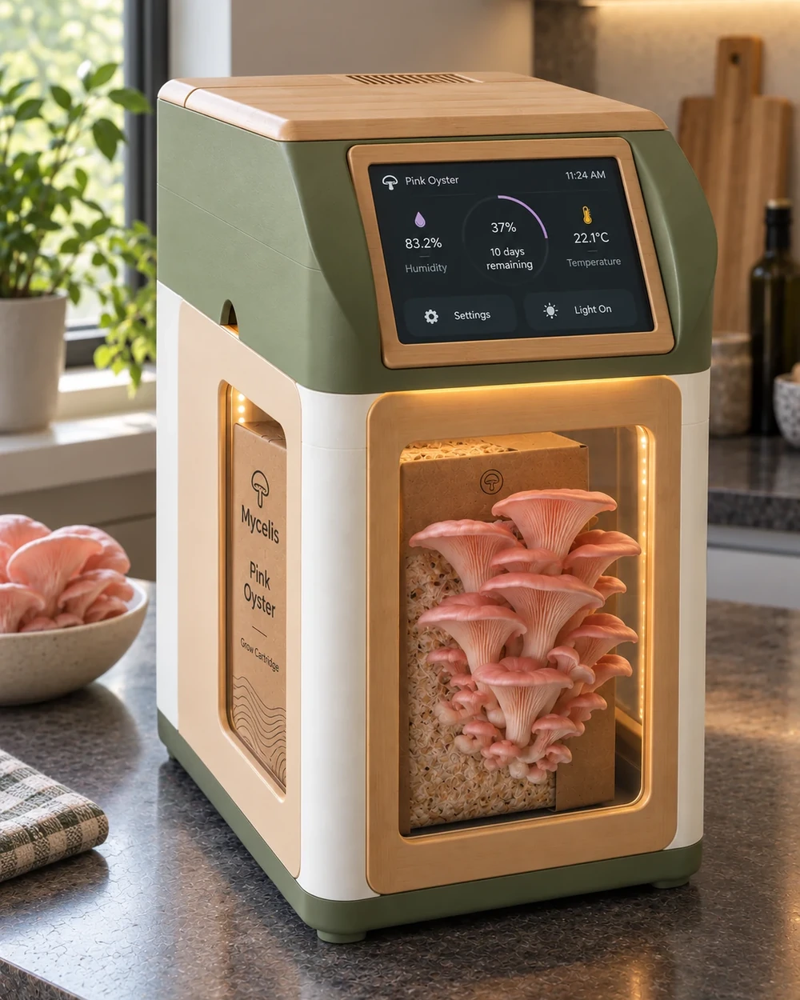
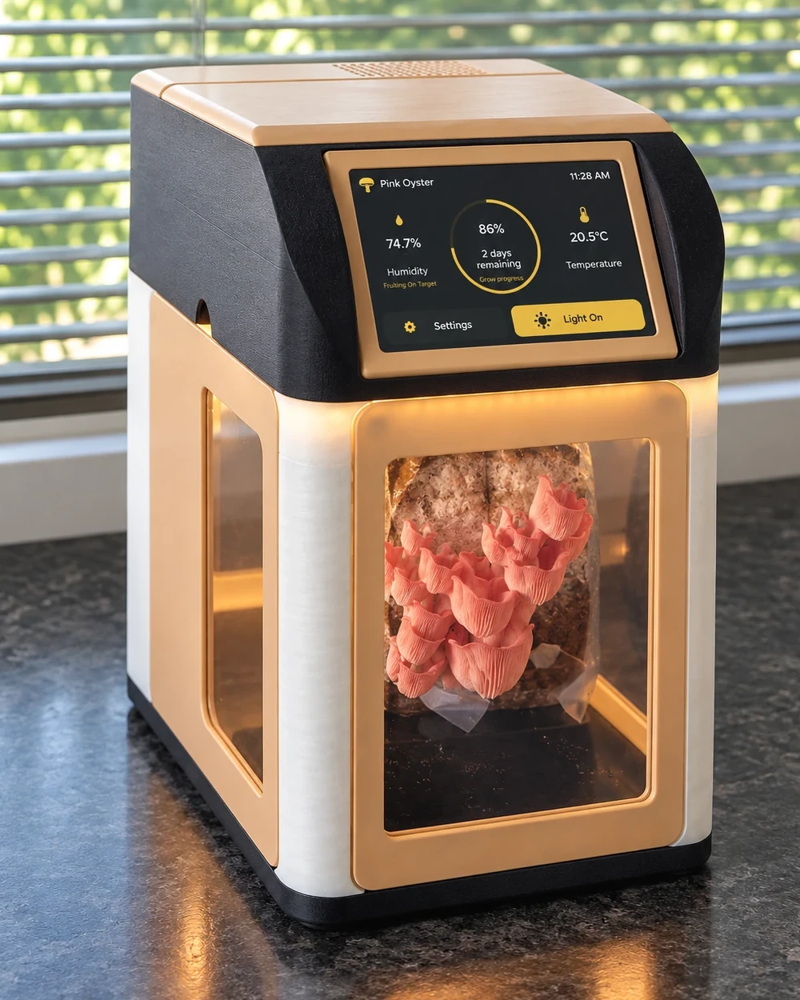

Mycelis
Grow oyster mushrooms on your kitchen bench.
Mycelis is a growing chamber for a ready-to-grow mushroom cartridge. Slide the cartridge in, use the screen to check the grow, and pick your mushrooms when they're ready.
The prototype is growing pink oysters now. We're nearly ready to show it in person.
Get Mycelis updates

Current prototype · October 2026
Pink oysters in the October build.
This is the working Mycelis prototype with mushrooms growing inside. The chamber, lights and screen are in place, and we're using the build to work through the controls and growing setup.
There's still finishing work to do. The green version above shows the design we're aiming for, so expect some details to change as we go.
If you'd like to see it running, send us a message. We'll share viewing details once it's ready.
How Mycelis works
How a grow works
The cartridge holds the prepared grow block. You won't need to start by mixing substrate or inoculating a block at home.
- 01
Load it.
Pull off the magnetic side window, slide the cartridge into the chamber, and put the window back. Fill the reservoir before starting the grow.
- 02
Watch it.
The chamber is designed to support light, airflow and humidity. The screen shows the readings and grow progress, so you can check what's going on.
- 03
Pick it.
Harvest the mushrooms when they're ready. After the grow, remove the used cartridge and clean the chamber before starting another.
Loading a cartridge
The window comes off from the side.
The side window is held on with magnets. It lifts away completely, giving you room to slide the cardboard cartridge into place. The front window stays where it is.
That also means leaving some space beside the machine. You should be able to load and remove a cartridge without having to rearrange the kitchen every time.
We're still working through the final cartridge range and care instructions. The grow in the prototype photo is pink oyster.

About using Mycelis
A few practical questions
Do I need an app?
The controls are on the machine. The current screen shows temperature, humidity and grow progress, with settings you can open there. You don't need an app to use those controls.
Will it work with any mushroom grow bag?
We're designing Mycelis around its own cartridge fit. We aren't promising compatibility with other grow bags or blocks at this stage.
How much room will it need?
A kitchen bench is the intention, with space at the side to load the cartridge. Final dimensions aren't published yet, so please wait for those before planning a tight spot for it.
When can I buy the machine or cartridges?
They aren't on sale yet. Machine pricing, cartridge options and release timing still need to be confirmed. We'll share those details through the mailing list and this site.
Mycelis
Want to see it running?
Leave your email and we'll let you know when there's a chance to see the prototype.
Get Mycelis updates